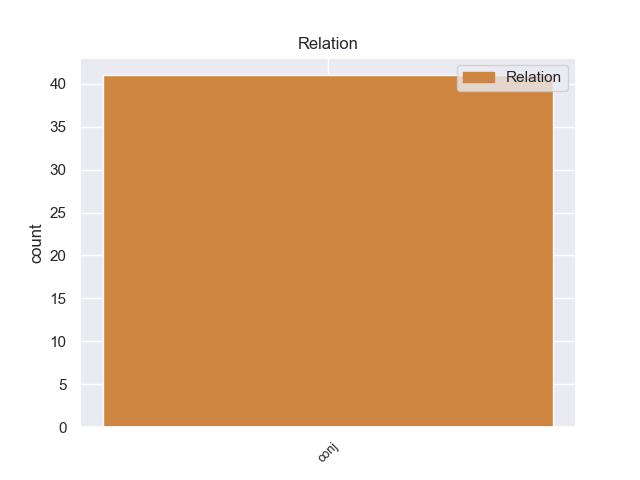
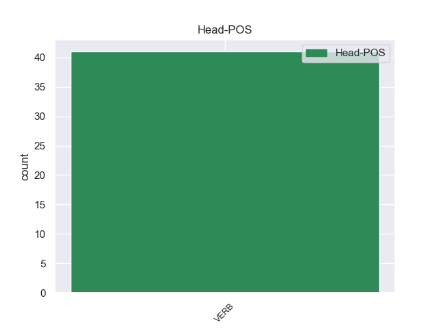
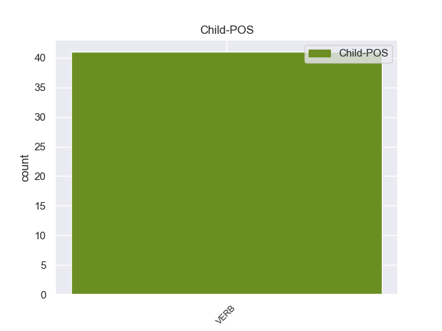

Distribution of features within this leaf



Agreement Rules sorted by frequency.
- When the dependent token is the conjunct(conj) of the head token, and the head token is VERB
1 मजूदरों _ _ _ _ 0 _ _ _
2 एवं _ _ _ _ 0 _ _ _
3 प्रबंधन _ _ _ _ 0 _ _ _
4 के _ _ _ _ 0 _ _ _
5 बीच _ _ _ _ 0 _ _ _
6 इसको _ _ _ _ 0 _ _ _
7 लेकर _ _ _ _ 0 _ _ _
8 भी _ _ _ _ 0 _ _ _
9 सहमति _ _ _ _ 0 _ _ _
10 बनी _ _ _ _ 0 _ _ _
11 है _ _ _ _ 0 _ _ _
12 कि _ _ _ _ 0 _ _ _
13 यदि _ _ _ _ 0 _ _ _
14 श्रमिक _ _ _ _ 0 _ _ _
15 पूर्ण _ _ _ _ 0 _ _ _
16 सहयोग _ _ _ _ 0 _ _ _
17 देंगे _ _ _ _ 0 _ _ _
18 , _ _ _ _ 0 _ _ _
19 अच्छा _ _ _ _ 0 _ _ _
20 व्यवहार _ _ _ _ 0 _ _ _
21 करेंगे _ _ _ _ 0 _ _ _
22 तथा _ _ _ _ 0 _ _ _
23 अनुशासित _ _ _ _ 0 _ _ _
24 रहेंगे रह VERB VM Gender=Masc|Mood=Ind|Number=Plur|Person=3|Tense=Fut|VerbForm=Fin|Voice=Act 0 _ _ _
25 और _ _ _ _ 0 _ _ _
26 निर्धारित _ _ _ _ 0 _ _ _
27 उत्पादन _ _ _ _ 0 _ _ _
28 देंगे दे VERB VM Gender=Masc|Mood=Ind|Number=Plur|Person=3|Tense=Fut|VerbForm=Fin|Voice=Act 24 conj _ ChunkId=VGF5|ChunkType=head|Stype=declarative|Tam=gA|Translit=deṁge|Vib=गा
29 तब _ _ _ _ 0 _ _ _
30 ही _ _ _ _ 0 _ _ _
31 एक _ _ _ _ 0 _ _ _
32 वर्ष _ _ _ _ 0 _ _ _
33 बाद _ _ _ _ 0 _ _ _
34 उनके _ _ _ _ 0 _ _ _
35 वेतन _ _ _ _ 0 _ _ _
36 में _ _ _ _ 0 _ _ _
37 वृद्धि _ _ _ _ 0 _ _ _
38 होगी _ _ _ _ 0 _ _ _
39 । _ _ _ _ 0 _ _ _
Disagree Examples:
1 ताकि _ _ _ _ 0 _ _ _
2 वे _ _ _ _ 0 _ _ _
3 कॉमनवेल्थगेम्स _ _ _ _ 0 _ _ _
4 की _ _ _ _ 0 _ _ _
5 कामयाबी _ _ _ _ 0 _ _ _
6 ’ _ _ _ _ 0 _ _ _
7 को _ _ _ _ 0 _ _ _
8 आगे _ _ _ _ 0 _ _ _
9 भी _ _ _ _ 0 _ _ _
10 दोहरा _ _ _ _ 0 _ _ _
11 पाएं _ _ _ _ 0 _ _ _
12 यह _ _ _ _ 0 _ _ _
13 भी _ _ _ _ 0 _ _ _
14 सही _ _ _ _ 0 _ _ _
15 है _ _ _ _ 0 _ _ _
16 कि _ _ _ _ 0 _ _ _
17 गेम्स _ _ _ _ 0 _ _ _
18 खत्म _ _ _ _ 0 _ _ _
19 होने _ _ _ _ 0 _ _ _
20 के _ _ _ _ 0 _ _ _
21 बाद _ _ _ _ 0 _ _ _
22 ये _ _ _ _ 0 _ _ _
23 सब _ _ _ _ 0 _ _ _
24 मुद्दे _ _ _ _ 0 _ _ _
25 खत्म _ _ _ _ 0 _ _ _
26 नहीं _ _ _ _ 0 _ _ _
27 होंगे _ _ _ _ 0 _ _ _
28 काम _ _ _ _ 0 _ _ _
29 की _ _ _ _ 0 _ _ _
30 क्वॉलिटी _ _ _ _ 0 _ _ _
31 , _ _ _ _ 0 _ _ _
32 गेम्स _ _ _ _ 0 _ _ _
33 की _ _ _ _ 0 _ _ _
34 सफलता _ _ _ _ 0 _ _ _
35 या _ _ _ _ 0 _ _ _
36 असफलता _ _ _ _ 0 _ _ _
37 , _ _ _ _ 0 _ _ _
38 कौन _ _ _ _ 0 _ _ _
39 किस _ _ _ _ 0 _ _ _
40 बात _ _ _ _ 0 _ _ _
41 के _ _ _ _ 0 _ _ _
42 लिए _ _ _ _ 0 _ _ _
43 और _ _ _ _ 0 _ _ _
44 कितना _ _ _ _ 0 _ _ _
45 दोषी _ _ _ _ 0 _ _ _
46 है _ _ _ _ 0 _ _ _
47 , _ _ _ _ 0 _ _ _
48 इन _ _ _ _ 0 _ _ _
49 सब _ _ _ _ 0 _ _ _
50 मुद्दों _ _ _ _ 0 _ _ _
51 पर _ _ _ _ 0 _ _ _
52 मीडिया _ _ _ _ 0 _ _ _
53 और _ _ _ _ 0 _ _ _
54 दूसरे _ _ _ _ 0 _ _ _
55 मंचों _ _ _ _ 0 _ _ _
56 पर _ _ _ _ 0 _ _ _
57 भी _ _ _ _ 0 _ _ _
58 खुलकर _ _ _ _ 0 _ _ _
59 चर्चा _ _ _ _ 0 _ _ _
60 होगी हो VERB VM Gender=Fem|Mood=Ind|Number=Sing|Person=3|Tense=Fut|VerbForm=Fin|Voice=Act 0 _ _ _
61 लेकिन _ _ _ _ 0 _ _ _
62 अभी _ _ _ _ 0 _ _ _
63 मैं _ _ _ _ 0 _ _ _
64 उनको _ _ _ _ 0 _ _ _
65 छोड़ता _ _ _ _ 0 _ _ _
66 हूं _ _ _ _ 0 _ _ _
67 और _ _ _ _ 0 _ _ _
68 कुछ _ _ _ _ 0 _ _ _
69 ऐसी _ _ _ _ 0 _ _ _
70 बातें _ _ _ _ 0 _ _ _
71 आपके _ _ _ _ 0 _ _ _
72 साथ _ _ _ _ 0 _ _ _
73 शेयर _ _ _ _ 0 _ _ _
74 करता _ _ _ _ 0 _ _ _
75 हूं _ _ _ _ 0 _ _ _
76 जो _ _ _ _ 0 _ _ _
77 मैंने _ _ _ _ 0 _ _ _
78 पिछले _ _ _ _ 0 _ _ _
79 कुछ _ _ _ _ 0 _ _ _
80 दिनों _ _ _ _ 0 _ _ _
81 में _ _ _ _ 0 _ _ _
82 दिल्ली _ _ _ _ 0 _ _ _
83 की _ _ _ _ 0 _ _ _
84 सड़कों _ _ _ _ 0 _ _ _
85 पर _ _ _ _ 0 _ _ _
86 चलते _ _ _ _ 0 _ _ _
87 हुए _ _ _ _ 0 _ _ _
88 या _ _ _ _ 0 _ _ _
89 साइकिल _ _ _ _ 0 _ _ _
90 चलाते _ _ _ _ 0 _ _ _
91 हुए _ _ _ _ 0 _ _ _
92 देखीं _ _ _ _ 0 _ _ _
93 मैं _ _ _ _ 0 _ _ _
94 चाहता _ _ _ _ 0 _ _ _
95 हूं _ _ _ _ 0 _ _ _
96 कि _ _ _ _ 0 _ _ _
97 आप _ _ _ _ 0 _ _ _
98 भी _ _ _ _ 0 _ _ _
99 अपने _ _ _ _ 0 _ _ _
100 अनुभव _ _ _ _ 0 _ _ _
101 मेरे _ _ _ _ 0 _ _ _
102 साथ _ _ _ _ 0 _ _ _
103 बांटें _ _ _ _ 0 _ _ _
104 अगर _ _ _ _ 0 _ _ _
105 आप _ _ _ _ 0 _ _ _
106 कार _ _ _ _ 0 _ _ _
107 में _ _ _ _ 0 _ _ _
108 बैठे _ _ _ _ 0 _ _ _
109 हैं _ _ _ _ 0 _ _ _
110 तो _ _ _ _ 0 _ _ _
111 दिल्ली _ _ _ _ 0 _ _ _
112 की _ _ _ _ 0 _ _ _
113 सड़कों _ _ _ _ 0 _ _ _
114 पर _ _ _ _ 0 _ _ _
115 दोनों _ _ _ _ 0 _ _ _
116 तरफ _ _ _ _ 0 _ _ _
117 बने _ _ _ _ 0 _ _ _
118 साइडवॉक्स _ _ _ _ 0 _ _ _
119 पर _ _ _ _ 0 _ _ _
120 लगाए _ _ _ _ 0 _ _ _
121 गए _ _ _ _ 0 _ _ _
122 पत्थर _ _ _ _ 0 _ _ _
123 बेहद _ _ _ _ 0 _ _ _
124 खूबसूरत _ _ _ _ 0 _ _ _
125 लगते _ _ _ _ 0 _ _ _
126 हैं _ _ _ _ 0 _ _ _
127 लेकिन _ _ _ _ 0 _ _ _
128 दूर _ _ _ _ 0 _ _ _
129 के _ _ _ _ 0 _ _ _
130 ढोल _ _ _ _ 0 _ _ _
131 सुहावने _ _ _ _ 0 _ _ _
132 होते _ _ _ _ 0 _ _ _
133 हैं _ _ _ _ 0 _ _ _
134 ज़रा _ _ _ _ 0 _ _ _
135 पास _ _ _ _ 0 _ _ _
136 आकर _ _ _ _ 0 _ _ _
137 और _ _ _ _ 0 _ _ _
138 कुछ _ _ _ _ 0 _ _ _
139 कदम _ _ _ _ 0 _ _ _
140 चलेंगे _ _ _ _ 0 _ _ _
141 तो _ _ _ _ 0 _ _ _
142 आपको _ _ _ _ 0 _ _ _
143 पता _ _ _ _ 0 _ _ _
144 चलेगा _ _ _ _ 0 _ _ _
145 कि _ _ _ _ 0 _ _ _
146 कहीं _ _ _ _ 0 _ _ _
147 कोई _ _ _ _ 0 _ _ _
148 टाइल _ _ _ _ 0 _ _ _
149 टूटी _ _ _ _ 0 _ _ _
150 पड़ी _ _ _ _ 0 _ _ _
151 है _ _ _ _ 0 _ _ _
152 तो _ _ _ _ 0 _ _ _
153 कहीं _ _ _ _ 0 _ _ _
154 टाइल _ _ _ _ 0 _ _ _
155 ही _ _ _ _ 0 _ _ _
156 गायब _ _ _ _ 0 _ _ _
157 है _ _ _ _ 0 _ _ _
158 , _ _ _ _ 0 _ _ _
159 कहीं _ _ _ _ 0 _ _ _
160 किसी _ _ _ _ 0 _ _ _
161 इलेक्ट्रिक _ _ _ _ 0 _ _ _
162 पोल _ _ _ _ 0 _ _ _
163 का _ _ _ _ 0 _ _ _
164 टूटा _ _ _ _ 0 _ _ _
165 बचा _ _ _ _ 0 _ _ _
166 हिस्सा _ _ _ _ 0 _ _ _
167 निकला _ _ _ _ 0 _ _ _
168 पड़ा _ _ _ _ 0 _ _ _
169 है _ _ _ _ 0 _ _ _
170 तो _ _ _ _ 0 _ _ _
171 कहीं _ _ _ _ 0 _ _ _
172 गड्ढा _ _ _ _ 0 _ _ _
173 सा _ _ _ _ 0 _ _ _
174 हो _ _ _ _ 0 _ _ _
175 गया _ _ _ _ 0 _ _ _
176 है _ _ _ _ 0 _ _ _
177 जिसको _ _ _ _ 0 _ _ _
178 पलस्तर _ _ _ _ 0 _ _ _
179 लगाकर _ _ _ _ 0 _ _ _
180 सपाट _ _ _ _ 0 _ _ _
181 करने _ _ _ _ 0 _ _ _
182 की _ _ _ _ 0 _ _ _
183 कोशिश _ _ _ _ 0 _ _ _
184 की _ _ _ _ 0 _ _ _
185 गई _ _ _ _ 0 _ _ _
186 है _ _ _ _ 0 _ _ _
187 कहीं _ _ _ _ 0 _ _ _
188 पूरा _ _ _ _ 0 _ _ _
189 साइडवॉक _ _ _ _ 0 _ _ _
190 ही _ _ _ _ 0 _ _ _
191 ऊंचा _ _ _ _ 0 _ _ _
192 - _ _ _ _ 0 _ _ _
193 नीचा _ _ _ _ 0 _ _ _
194 है _ _ _ _ 0 _ _ _
195 तो _ _ _ _ 0 _ _ _
196 अगर _ _ _ _ 0 _ _ _
197 इस _ _ _ _ 0 _ _ _
198 खूबसूरत _ _ _ _ 0 _ _ _
199 साइडवॉक _ _ _ _ 0 _ _ _
200 बनाने _ _ _ _ 0 _ _ _
201 का _ _ _ _ 0 _ _ _
202 मकसद _ _ _ _ 0 _ _ _
203 यह _ _ _ _ 0 _ _ _
204 है _ _ _ _ 0 _ _ _
205 कि _ _ _ _ 0 _ _ _
206 पैदलयात्री _ _ _ _ 0 _ _ _
207 आराम _ _ _ _ 0 _ _ _
208 से _ _ _ _ 0 _ _ _
209 इस _ _ _ _ 0 _ _ _
210 पर _ _ _ _ 0 _ _ _
211 चल _ _ _ _ 0 _ _ _
212 सकें _ _ _ _ 0 _ _ _
213 तो _ _ _ _ 0 _ _ _
214 यह _ _ _ _ 0 _ _ _
215 मकसद _ _ _ _ 0 _ _ _
216 तो _ _ _ _ 0 _ _ _
217 पूरा _ _ _ _ 0 _ _ _
218 होता _ _ _ _ 0 _ _ _
219 नज़र _ _ _ _ 0 _ _ _
220 नहीं _ _ _ _ 0 _ _ _
221 आता _ _ _ _ 0 _ _ _
222 क्योंकि _ _ _ _ 0 _ _ _
223 कोई _ _ _ _ 0 _ _ _
224 अगर _ _ _ _ 0 _ _ _
225 बगैर _ _ _ _ 0 _ _ _
226 नीचे _ _ _ _ 0 _ _ _
227 देखे _ _ _ _ 0 _ _ _
228 चले _ _ _ _ 0 _ _ _
229 तो _ _ _ _ 0 _ _ _
230 यह _ _ _ _ 0 _ _ _
231 तय _ _ _ _ 0 _ _ _
232 है _ _ _ _ 0 _ _ _
233 कि _ _ _ _ 0 _ _ _
234 20 _ _ _ _ 0 _ _ _
235 कदम _ _ _ _ 0 _ _ _
236 होते _ _ _ _ 0 _ _ _
237 - _ _ _ _ 0 _ _ _
238 न _ _ _ _ 0 _ _ _
239 - _ _ _ _ 0 _ _ _
240 होते _ _ _ _ 0 _ _ _
241 वह _ _ _ _ 0 _ _ _
242 किसीनकिसी _ _ _ _ 0 _ _ _
243 अवरोध _ _ _ _ 0 _ _ _
244 से _ _ _ _ 0 _ _ _
245 टकरा _ _ _ _ 0 _ _ _
246 कर _ _ _ _ 0 _ _ _
247 या _ _ _ _ 0 _ _ _
248 तो _ _ _ _ 0 _ _ _
249 लड़खड़ा _ _ _ _ 0 _ _ _
250 जाएगा _ _ _ _ 0 _ _ _
251 या _ _ _ _ 0 _ _ _
252 फिर _ _ _ _ 0 _ _ _
253 ठोकर _ _ _ _ 0 _ _ _
254 खाकर _ _ _ _ 0 _ _ _
255 गिर _ _ _ _ 0 _ _ _
256 पड़ेगा _ _ _ _ 0 _ _ _
257 हां _ _ _ _ 0 _ _ _
258 , _ _ _ _ 0 _ _ _
259 यह _ _ _ _ 0 _ _ _
260 मानना _ _ _ _ 0 _ _ _
261 पड़ेगा _ _ _ _ 0 _ _ _
262 कि _ _ _ _ 0 _ _ _
263 इस _ _ _ _ 0 _ _ _
264 मामले _ _ _ _ 0 _ _ _
265 में _ _ _ _ 0 _ _ _
266 कॉन्ट्रैक्टर _ _ _ _ 0 _ _ _
267 ने _ _ _ _ 0 _ _ _
268 कोई _ _ _ _ 0 _ _ _
269 भेदभाव _ _ _ _ 0 _ _ _
270 नहीं _ _ _ _ 0 _ _ _
271 है है VERB VM Mood=Ind|Number=Sing|Person=3|Tense=Pres|VerbForm=Fin|Voice=Act 60 conj _ _
1 चिड़ियाघर _ _ _ _ 0 _ _ _
2 में _ _ _ _ 0 _ _ _
3 भी _ _ _ _ 0 _ _ _
4 यह _ _ _ _ 0 _ _ _
5 साइकिल _ _ _ _ 0 _ _ _
6 चलाकर _ _ _ _ 0 _ _ _
7 लोगों _ _ _ _ 0 _ _ _
8 का _ _ _ _ 0 _ _ _
9 मनोरंजन _ _ _ _ 0 _ _ _
10 किया _ _ _ _ 0 _ _ _
11 करताथा _ _ _ _ 0 _ _ _
12 . _ _ _ _ 0 _ _ _
13 एक _ _ _ _ 0 _ _ _
14 दिन _ _ _ _ 0 _ _ _
15 जब _ _ _ _ 0 _ _ _
16 यह _ _ _ _ 0 _ _ _
17 साइकिल _ _ _ _ 0 _ _ _
18 चलाने _ _ _ _ 0 _ _ _
19 लगा _ _ _ _ 0 _ _ _
20 , _ _ _ _ 0 _ _ _
21 तब _ _ _ _ 0 _ _ _
22 एक _ _ _ _ 0 _ _ _
23 भी _ _ _ _ 0 _ _ _
24 दर्शक _ _ _ _ 0 _ _ _
25 न _ _ _ _ 0 _ _ _
26 था था VERB VM Gender=Masc|Mood=Ind|Number=Sing|Tense=Past|VerbForm=Fin|Voice=Act 0 _ _ _
27 और _ _ _ _ 0 _ _ _
28 न _ _ _ _ 0 _ _ _
29 द्वार _ _ _ _ 0 _ _ _
30 - _ _ _ _ 0 _ _ _
31 रक्षकका _ _ _ _ 0 _ _ _
32 ही _ _ _ _ 0 _ _ _
33 कहीं _ _ _ _ 0 _ _ _
34 पता _ _ _ _ 0 _ _ _
35 था _ _ _ _ 0 _ _ _
36 . _ _ _ _ 0 _ _ _
37 संयोग _ _ _ _ 0 _ _ _
38 से _ _ _ _ 0 _ _ _
39 दरवाजा _ _ _ _ 0 _ _ _
40 भी _ _ _ _ 0 _ _ _
41 खुला _ _ _ _ 0 _ _ _
42 था _ _ _ _ 0 _ _ _
43 . _ _ _ _ 0 _ _ _
44 फिर _ _ _ _ 0 _ _ _
45 तो _ _ _ _ 0 _ _ _
46 वह _ _ _ _ 0 _ _ _
47 साइकिल _ _ _ _ 0 _ _ _
48 चलाता _ _ _ _ 0 _ _ _
49 हुआबाहर _ _ _ _ 0 _ _ _
50 निकल _ _ _ _ 0 _ _ _
51 आया _ _ _ _ 0 _ _ _
52 और _ _ _ _ 0 _ _ _
53 बाजार _ _ _ _ 0 _ _ _
54 की _ _ _ _ 0 _ _ _
55 सैर _ _ _ _ 0 _ _ _
56 करके _ _ _ _ 0 _ _ _
57 फिर _ _ _ _ 0 _ _ _
58 चिड़ियाघर _ _ _ _ 0 _ _ _
59 में _ _ _ _ 0 _ _ _
60 चला _ _ _ _ 0 _ _ _
61 गया _ _ _ _ 0 _ _ _
62 . _ _ _ _ 0 _ _ _
63 बन्दर _ _ _ _ 0 _ _ _
64 कीतरह _ _ _ _ 0 _ _ _
65 भालू _ _ _ _ 0 _ _ _
66 भी _ _ _ _ 0 _ _ _
67 भागने _ _ _ _ 0 _ _ _
68 में _ _ _ _ 0 _ _ _
69 तेज _ _ _ _ 0 _ _ _
70 होते _ _ _ _ 0 _ _ _
71 हैं _ _ _ _ 0 _ _ _
72 . _ _ _ _ 0 _ _ _
73 उनमें _ _ _ _ 0 _ _ _
74 समझ _ _ _ _ 0 _ _ _
75 भी _ _ _ _ 0 _ _ _
76 अच्छी _ _ _ _ 0 _ _ _
77 होती _ _ _ _ 0 _ _ _
78 है _ _ _ _ 0 _ _ _
79 . _ _ _ _ 0 _ _ _
80 जहाँकहीं _ _ _ _ 0 _ _ _
81 अवसर _ _ _ _ 0 _ _ _
82 मिला _ _ _ _ 0 _ _ _
83 कि _ _ _ _ 0 _ _ _
84 रफूचक्कर _ _ _ _ 0 _ _ _
85 हो _ _ _ _ 0 _ _ _
86 जाते _ _ _ _ 0 _ _ _
87 हैं _ _ _ _ 0 _ _ _
88 . _ _ _ _ 0 _ _ _
89 एक _ _ _ _ 0 _ _ _
90 चिड़ियाघर _ _ _ _ 0 _ _ _
91 में _ _ _ _ 0 _ _ _
92 एक _ _ _ _ 0 _ _ _
93 सफेद _ _ _ _ 0 _ _ _
94 भालथा _ _ _ _ 0 _ _ _
95 . _ _ _ _ 0 _ _ _
96 एक _ _ _ _ 0 _ _ _
97 दिन _ _ _ _ 0 _ _ _
98 उसका _ _ _ _ 0 _ _ _
99 रक्षक _ _ _ _ 0 _ _ _
100 द्वार _ _ _ _ 0 _ _ _
101 बन्द _ _ _ _ 0 _ _ _
102 करना _ _ _ _ 0 _ _ _
103 भूल _ _ _ _ 0 _ _ _
104 गया _ _ _ _ 0 _ _ _
105 . _ _ _ _ 0 _ _ _
106 भालू _ _ _ _ 0 _ _ _
107 को _ _ _ _ 0 _ _ _
108 यह _ _ _ _ 0 _ _ _
109 बात _ _ _ _ 0 _ _ _
110 मालूम _ _ _ _ 0 _ _ _
111 होगई _ _ _ _ 0 _ _ _
112 . _ _ _ _ 0 _ _ _
113 फिर _ _ _ _ 0 _ _ _
114 तो _ _ _ _ 0 _ _ _
115 वह _ _ _ _ 0 _ _ _
116 दरवाजे _ _ _ _ 0 _ _ _
117 को _ _ _ _ 0 _ _ _
118 ठेलकर _ _ _ _ 0 _ _ _
119 बाहर _ _ _ _ 0 _ _ _
120 निकल _ _ _ _ 0 _ _ _
121 आया _ _ _ _ 0 _ _ _
122 और _ _ _ _ 0 _ _ _
123 सड़क _ _ _ _ 0 _ _ _
124 पर _ _ _ _ 0 _ _ _
125 आगे _ _ _ _ 0 _ _ _
126 बढ़ने _ _ _ _ 0 _ _ _
127 लगा _ _ _ _ 0 _ _ _
128 . _ _ _ _ 0 _ _ _
129 भालू _ _ _ _ 0 _ _ _
130 को _ _ _ _ 0 _ _ _
131 देखकर _ _ _ _ 0 _ _ _
132 भला _ _ _ _ 0 _ _ _
133 कौंन _ _ _ _ 0 _ _ _
134 न _ _ _ _ 0 _ _ _
135 डरेगा डर VERB VM Gender=Masc|Mood=Ind|Number=Sing|Person=3|Tense=Fut|VerbForm=Fin|Voice=Act 26 conj _ _
136 ! _ _ _ _ 0 _ _ _